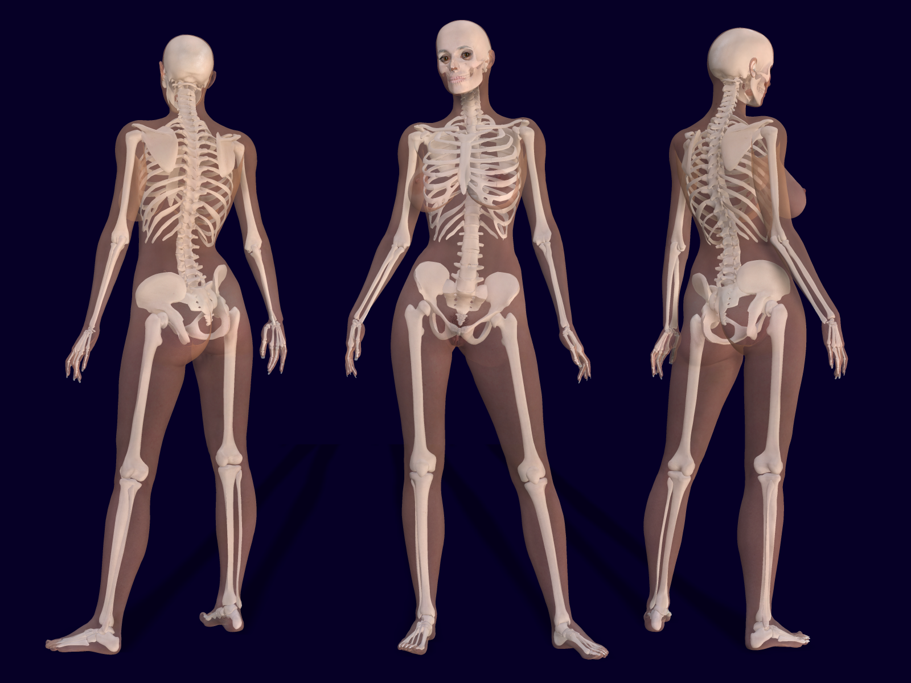
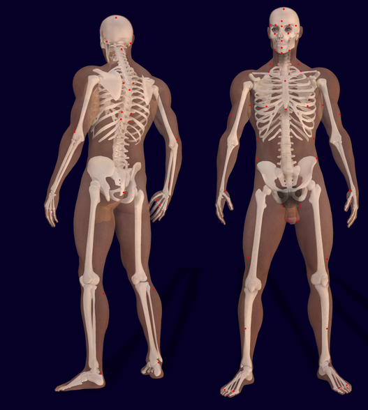

El sistema óseo desempeña diversas funciones cruciales que contribuyen al adecuado funcionamiento del organismo humano:
Sostén
El esqueleto cumple la función fundamental de mantener el cuerpo erguido, proporcionando una estructura resistente que contiene y sostiene los distintos tejidos corporales.
Protección
Actuando como una sólida coraza, los huesos endurecidos desempeñan un papel esencial al aislar y resguardar órganos delicados y sectores vitales del organismo. Entre estos se destacan el cerebro, los pulmones y el corazón.
Movimiento
La capacidad de desplazamiento del ser humano se atribuye a la función del esqueleto, el cual, junto con los cartílagos, las articulaciones y los músculos, constituye un conjunto de partes rígidas y duras que posibilitan el movimiento coordinado.
Almacenamiento de minerales
El sistema óseo sirve como depósito de minerales esenciales, contribuyendo así a mantener la rigidez de la estructura ósea. Además, desempeña un papel crucial en el suministro de sales para los músculos y los nervios.
Almacenamiento de grasas
Una función adicional del esqueleto es conservar reservas de grasas que actúan como una fuente potencial de energía para el organismo. Esta reserva se encuentra almacenada, por ejemplo, en la médula ósea.
Producción de hematocitos
La médula ósea es parte integral del sistema óseo, desempeña un papel vital en la producción de glóbulos rojos (hematocitos), indispensables para el transporte de oxígeno y diversas enzimas en la sangre del organismo.
 
Imagen de Bernhard Ungerer disponible en Wikimedia Commons
{kind=link}
{kind=link}